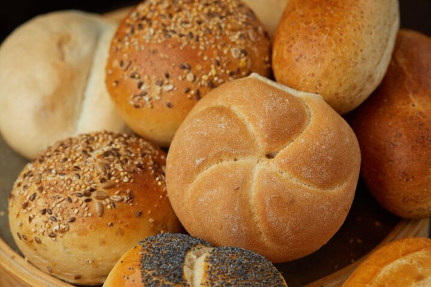

Tradycyjne Wypieki z Serca Małopolski
Od pokoleń łączymy pasję, naturalne składniki i tradycyjne receptury, aby każdego ranka dostarczać na Wasze stoły chrupiący, pachnący chleb.
Naturalny Zakwas
Nasz chleb rośnie wyłącznie na naturalnym, wieloletnim zakwasie żytnim, bez sztucznych spulchniaczy.
Tradycyjny Piec
Wypiekamy pieczywo w piecach ceramicznych, co gwarantuje idealnie chrupiącą skórkę i miękki środek.
Lokalne Składniki
Mąkę i dodatki pozyskujemy wyłącznie od sprawdzonych, okolicznych rolników i młynów.
Nasze Specjały
Kliknij na dowolny produkt, aby zobaczyć jego tradycyjny skład, alergeny oraz zdjęcie przekroju wnętrza!

Chleb Wiejski na Zakwasie
Kultowy chleb o grubej, chrupiącej skórce i miękkim, sprężystym wnętrzu. Prawdziwy smak tradycji.

Bułeczki Poranne
Lekkie, puszyste i wypiekane o świcie. Złocista skórka obficie obsypana naturalnymi, chrupiącymi ziarnami.

Drożdżówki Rzemieślnicze
Słodkie chwile zapomnienia przygotowywane na bazie prawdziwego twarogu, wiejskiego masła i owoców.